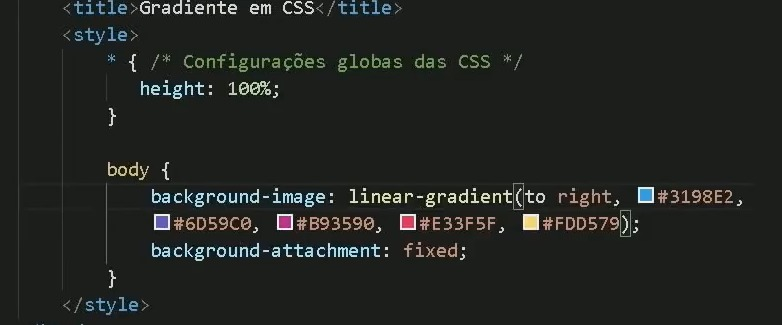
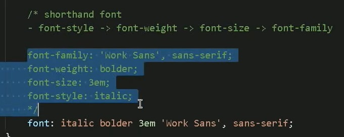
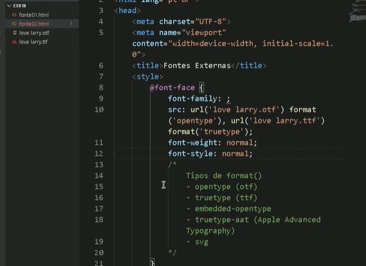
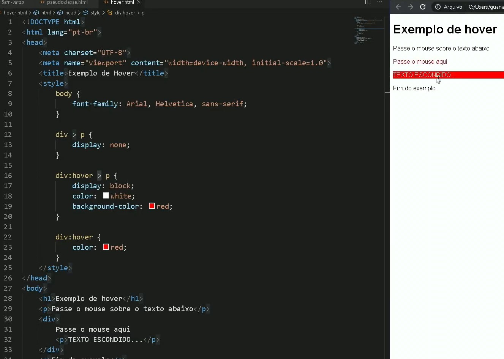

seria um estilo dentro do tag com o style
criar estilos separado do htmil, mais orgnizado, no head
cores podem ser escrito em ingles, rgb, hexadecimal, hsl....
clique aqui para visualizar o degrade

fontes existe 3 tipos, voce coloca o que voce quer, pode ter uma safe fonte na qual se um dispositivo nao tiver a fonte assumira aquele
fontes size: absolutas e relativas (1em =16px/É relativa ao tamanho da fonte do elemento pai. use px ou em)
alguns fontes podem ter peso usando font-weight (lighter, normal, bold, bolder/ 100~900)
fontes podem ter style (font-style)/ font-decoration
fonte pode ser da internet basta copiar e colocar em baixo do style

font face : font externo/ pode colocar com mesmo nome para que caso um nao funcionar aparece o outro

text-align: right, center, left
text-align: justify
text-indent: 20px (espacamento do paragrafo)
posso identificar cada elemento: <id: "principal"> e usar h1#principal
quando é mais que uma igual id eu uso class; no lugar do style vai ser : .principal ; posso colocar mais que um class posso colocar nomeio de um texto com span

ao passar pode aconter uma interacao(aparecer/ mudar de cor)/ div = uma caixa/ :visited/ :hover / :activie(clicado)
# = id
. = class
: = pseudo-class
:: = pseudo-element
> = children
weidt width border padding outline margin
box-level (div)/ inline-level (span)
ultilize o dev stool do google que ajuda ver o espaco
marign: auto (centralizar)
border/ outline : width style color
padding: top right bottom left (se tudo igual pode colocar so uma) (duas = cima+baixo, esquerda e direita)
margin iguak o padding e pode colocar auto
antes tudo usa div agora div+semantica: header(nav ), main(section (article (aside))), footer
box shadow muito bom: usa o google dev tools melhor: px px px color
border radius